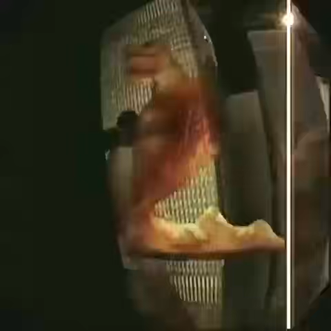
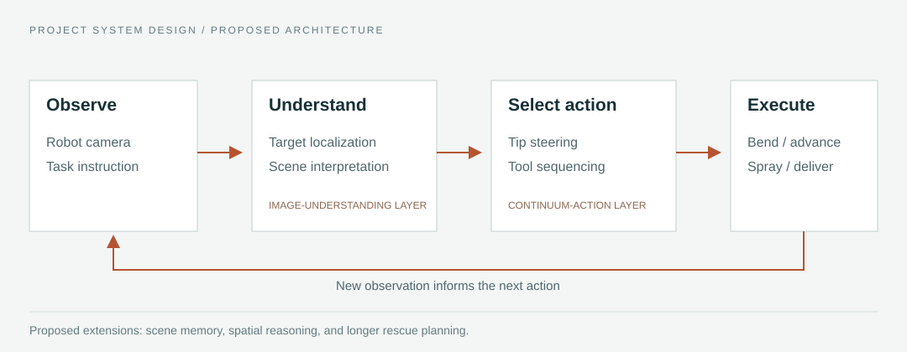
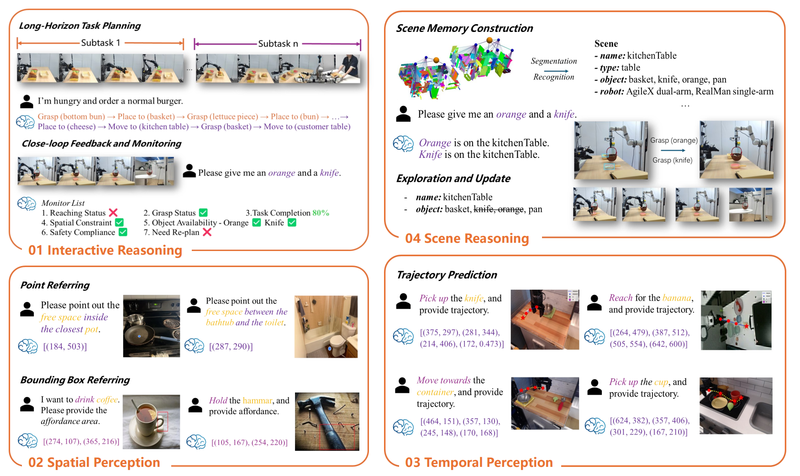
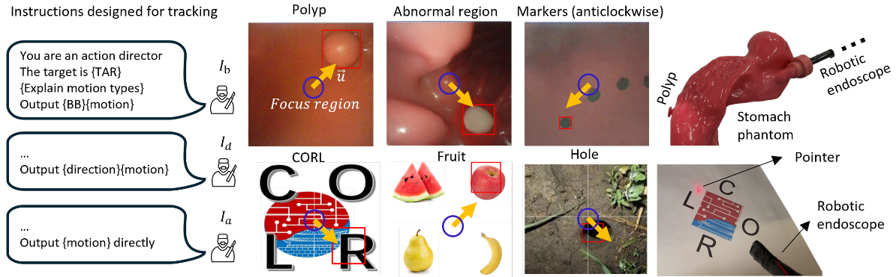
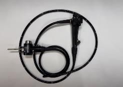
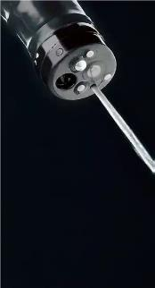
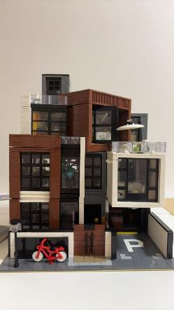
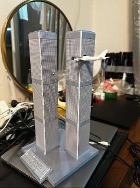
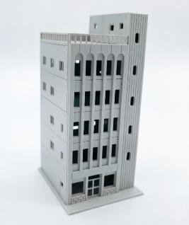

Interpret the scene.
Identify the task target and relevant obstacles from the robot view. The design also considers spatial reasoning and context from previous observations.
CONTINUUM ROBOTICS · RESEARCH PROJECT
Exploring Continuum Robot Agents For Fire Rescuing in Buildings
Prototype demonstrations in miniature building models; autonomous rescue remains a research objective.
Continuum robotic platforms for constrained-space rescue tasks
Steer toward a target. Deliver water through the body. Switch to material transport. Explore the task sequence in three miniature building environments.
Third Prize · Hong Kong University Student Innovation & Entrepreneurship Competition, 2026
ROBOT OBSERVATIONDense buildings contain narrow openings and occluded interiors. Inspired by endoscopic exploration, this project combines a steerable continuum body with robot-view sensing and working channels. The aim is to bring inspection and local intervention closer to targets that are difficult to reach.
以柔性連續體機器人進入建築救援盲區，將近距離觀察、定向噴水與物資遞送整合於同一本體。
Each scenario pairs the robot camera with an external view. The captions identify the behavior to observe; the clips run independently.
Qualitative miniature demonstrations. Targets represent fire scenarios; these clips do not establish live-fire suppression, clinical oxygen support, or measured autonomy. Paired clips have different durations and play independently.
The proposed architecture connects image understanding to continuum action through visual feedback. It specifies how observations could guide targeting, tip steering, and tool operation. The videos document physical task behavior; they do not independently establish an end-to-end autonomous implementation of this architecture.

Identify the task target and relevant obstacles from the robot view. The design also considers spatial reasoning and context from previous observations.
Connect the task to bending, advancement, spray direction, and ordered material transport. A new observation informs the next action.
RoboBrain 2.0 motivates the understanding layer. EndoVLA motivates visual instruction and action for a flexible instrument. These are related research foundations.




The front end is designed to bend in any direction around its axis. The body carries working pathways to the tip, allowing observation and intervention to share one platform.
Functional channel descriptions follow the system design; they do not identify individual openings in the photograph.
The project considers integration with building fire-hose infrastructure and flexible front ends on outdoor firefighting platforms. The present setups test these task ideas at miniature scale.

Target localization and tip aiming from outside the building.
Inspect the exterior task ↗
Indoor spraying followed by material delivery in one task.
Inspect the indoor task ↗
Exterior work, entry through an opening, then interior action.
Inspect the combined task ↗Camera views and physical task behavior in three building mock-ups: target-oriented tip motion, water spraying, and material transport. The demonstration targets represent fire-related tasks; they are not evidence of live-fire suppression.
Controlled trials, autonomy / operator-intervention reporting, heat and smoke robustness, and field deployment. Mask transport does not establish oxygen delivery or medical benefit. The demonstrations document physical prototype tasks.
The project received Third Prize in Innovation, in the Mathematics and Physics / Mechanics and Control Systems category. CUHK's official award list names the project as Exploring Continuum Robot Agents for Firefighting in Buildings.
The CUHK research record lists the award in May 2026. The university's event report dates the award ceremony to 30 May 2026.
CUHK research award record ↗CUHK event report ↗Official award list (p. 2) ↗